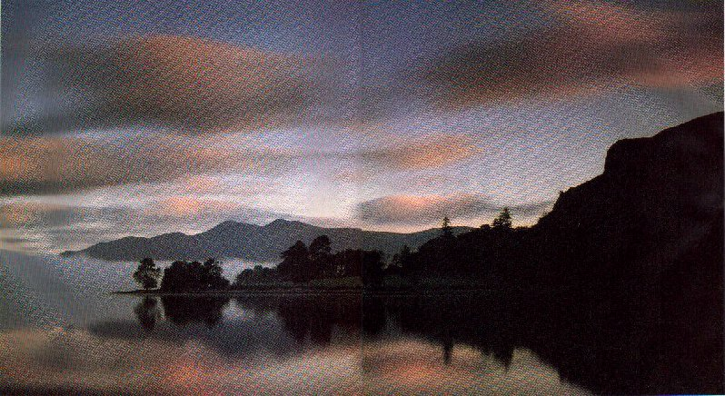

Trassgar: Aquus Keep
== part of The Trassgar Saga ==
Webdate: February 19 2001

The views of Aquus Keep are always impressive. Otherworldly mists continuously rise from the cool waters, and visitors to the Outpost often take a detour to picnic in the area, despite warnings (some call them tall tales) that sometimes the mists have a life of their own, and strange ethereal creatures frequent their wisps. Its history is long and grand, having been home to some of the most famed warriors of the Elven struggle.